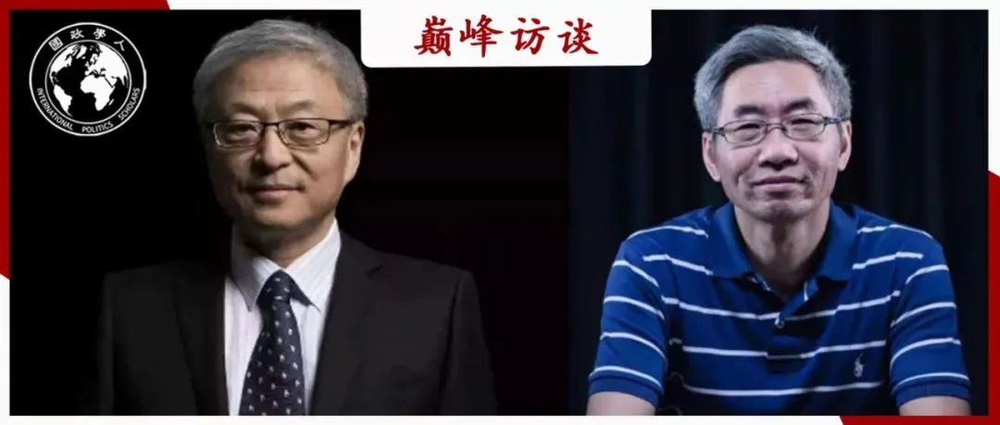
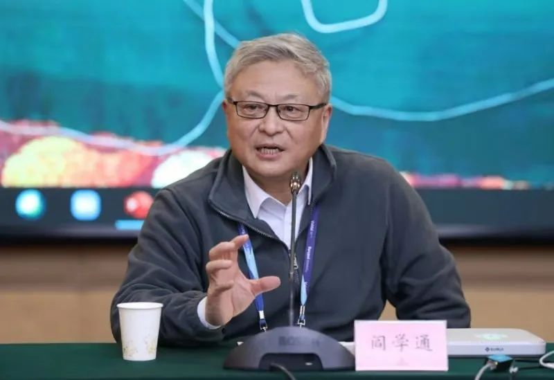
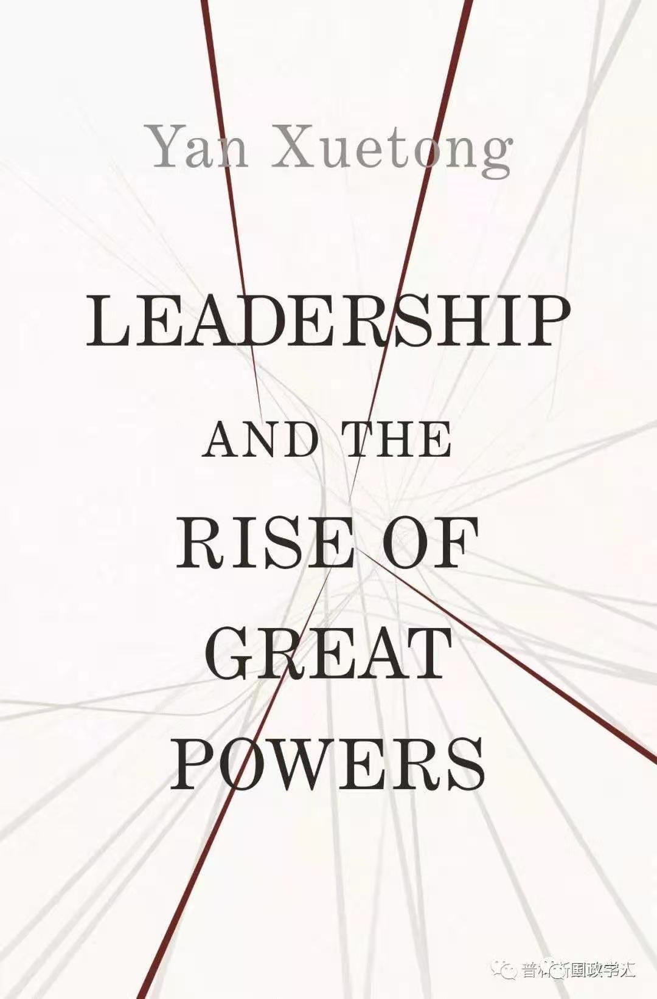
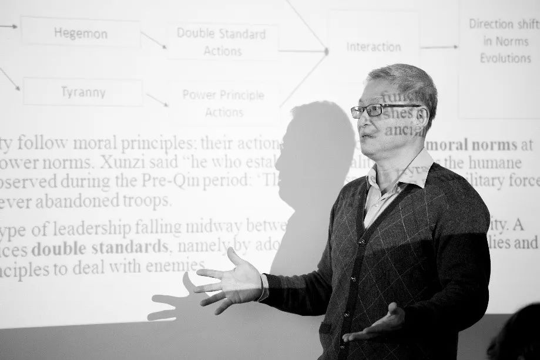
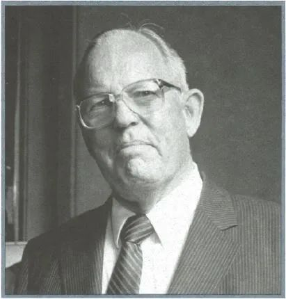

收录于合集 #名家访谈 6个


阎学通 & 唐世平
编者按
农历新年之初，国政学人平台隆重推出新一期“巅峰访谈”：唐世平教授专访阎学通教授。访谈内容涵盖了阎学通对国际关系学术研究与学科发展的心得体会以及对其个人研究、学生培育、创办学术刊物与学术共同体的经验感想。字里行间凝结了阎教授的思想精华，也让我们看到阎教授对中国国际关系学科发展、人才培养与学术事业所作的贡献！衷心感谢唐世平教授、阎学通教授对国政学人的支持！
“国政学人·名家专访”第四期
唐世平教授对话阎学通教授
【本期嘉宾】
阎学通教授
嘉宾：
阎学通 ：国际关系理论家，清华大学首批文科资深教授，清华大学国际关系研究院院长，世界和平论坛秘书长，兼任中国国际关系学会副会长、中华美国学会副会长；2008年被美国《外交政策》杂志评为全球百大知识分子之一，2011年出版Ancient Chinese Thought, Modern Chinese Power并创建道义现实主义理论，2014年至2017年为爱斯唯尔高被引学者中唯一的政治学学者。
采访：
唐世平： 复旦大学特聘教授、陈树渠讲席教授、教育部“长江学者”特聘教授。他的Social Evolution of International Politics (《国际政治的社会演化》）（牛津大学出版社，2013年）于2015年获得国际研究协会（ISA）的“年度最佳著作”奖。他是获得这一奖项的第一位中国学者和第一位亚洲学者。他的最新英文专著是On Social Evolution: Phenomenon and Paradigm（《论社会演化：现象与范式》）（Routledge, 2020）。他还是“掌中星球”新一代旅游商业平台的创始人兼CEO。
访谈正文
唐世平教授： 阎老师好，谢谢您给我一个采访您的机会。我相信，您的真知灼见，会让我们所有的晚辈都受益匪浅。为了方便，我的访谈将分为两个大的部分。一个关于您自己的研究，另一个关于您对学术共同体的关切和贡献。
第一部分：阎学通教授的研究 ****
唐世平教授： 您的研究一直以大国关系、大国兴衰为核心议题。这当然不仅不可厚非，而且完全符合您的现实主义者的“标签”。但是，这样带来的一个问题是，您的研究会和政策话题联系非常密切。而不少人会认为，和政策话题联系非常密切的研究，不容易产生深刻的理论，您如何回应这样的疑问?
阎学通教授： 国际关系理论研究和政策研究都可以研究三类问题，即“是什么”、“为什么”和“怎么办”的问题。 将政策研究升华为理论的也是有的，例如“相互确保摧毁战略”就是从核政策研究开始的，但谢林将其升华为理论研究，还得了诺贝尔奖。我当年在政府部门做政策研究的同时撰写的《中国国家利益分析》，也是个理论研究成果。 政策研究难出理论成果的最根本原因是，绝大多数政策研究人员没有受过理论研究的训练，缺乏理论研究能力；还有个工作原因是理论研究需要整块的时间，而专职的政策研究人员往往缺乏整块的时间。
唐世平教授： 您觉得应该如何处理政策研究和理论研究之间的关系？
阎学通教授： 应根据工作性质决定研究什么。政府和非政府的智库人员应以研究政策为主，但从事教学的老师则应侧重理论研究，否则教学工作是做不好的。 现在大学的教师分为教学、科研和教研三个系列。教学和教研系列的老师需要关注理论研究，但科研系列的教师主要是做政策研究。大学搞智库建设，对理论研究构成严重冲击。我认为大学教书的老师都应多研究理论，这有利于提高教学质量和人才培养。绝大多数教师们根本不了解国家对外交政策的具体情况，很难提出具有操作性的政策建议，浪费了精力且对外交决策也没什么帮助。政策研究是为了解决问题，其成果是过期作废，而理论研究是为了创新知识，其成果具有长期价值。 从推动学术进步的角度讲，我认为学者们应把精力用于理论研究。
唐世平教授： 如果一个年轻学者想直接进入政策研究，您会有何建议？
阎学通教授： 我会建议他先找到一个政策研究的专职工作。如果没有这样的工作条件，研究成果是没有提交渠道的，也就是说研究成果起不到任何解决问题的作用。如果研究者是业余爱好，自娱自乐则未尝不可。
唐世平教授： 您是中国大陆国际关系学界最早开始从中国的典籍（特别是先秦典籍）中发掘理论元素的学者之一。但是，您却不愿意把自己的研究作为“中国（国际关系）学派”的一部分。这估计是您曾经的同事，张锋不得不用一个“清华路径”来标记您和您的学生的努力的一个原因吧。为什么？是因为您的科学化态度么？（比如，您需要和赵汀阳的“天下体系”区分开来）
阎学通教授： 上世纪初梁启超等人就研究过先秦时期的国际关系，因此我不是最早研究中国古代国际关系的学者。但是，在研究先秦时期国际关系的学者中，我可能是较早建立起体系性理论的人。赵汀阳做的是中国古代哲学思想研究，他对“天下”的研究是一种哲学思辨，应该属于政治哲学理论，不是国际关系理论。如你所说，我不但试图建立一种国际关系理论，而且想建立一种科学的国关理论。我是从科学角度定义“理论”的，即理论是对客观世界的体系性的解释，理论体系中的概念和观点要逻辑自洽，即不能并列无关，更不能相互矛盾。2011年张峰用“清华路径”来描述我的理论成果，主要是因为当时的研究成果体系性还不够强。后来，我将理论中的概念进行系统化，即把各个概念之间的逻辑关系建立起，这样才成为体系性理论。此后这个理论就被称为“道义现实主义”了。 大家都认为科学无国界，那么科学理论也无国界，我创造的是科学理论，因此也无国界，成不了“中国学派”。
唐世平教授： 对于一些这样的质疑（也许包括我本人），即，因为国际政治体系的演化，中国的典籍（特别是先秦典籍）能够被赋予现代意义的元素可能并不是很多，甚至很少。您对这样的质疑如何回应？
阎学通教授： 先秦文献中与国际关系直接相关的文章不多，多数是零散的段落和对话。欧洲在轴心时代有关国际关系的文献也很少，也很零散。我和徐进梳理了先秦文献中有限的关于国际关系的内容，编成《中国先秦国家间政治思想选读》。然而， 内容少并不意味着其可供借鉴的现代学术价值意义小。其重要意义在于，2000多年前的思想观念仍可用于解释当今的国际关系现象，意味这些思想观念经过了历史的检验，具有很强的普世性。 例如，管子说的“国修而邻国无道，霸王之资也”。这个观念不仅可以解释古代的大国兴衰，也能解释当代的大国兴衰。苏联的解体和美国的相对衰落都是中国崛起的必要条件。如果美国和苏联的继承者俄罗斯在以往三十年里与中国同速发展，中国就不可能超越俄罗斯，也缩小不了与美国的综合国力，与它们的实力差距会更大。其实修昔底德的《伯罗奔尼撒战争史》中所能借鉴用于发展现代国际关系理论的内容也很少，可是当代的现实主义理论家们反复地借鉴那几个观点，特别是“强者行其所能为，弱者忍其所必受”的观点。
唐世平教授： 接着上面的问题，一部分呼吁发展“中国（国际关系）学派”的声音，甚至认为，“中国（国际关系）学派”完全不需要科学化，而且科学化不利于“中国（国际关系）学派”的发展，因为“科学化”就意味着西方化。您对这样的立场或者声音，有何评论？如果没有科学化，“中国（国际关系）学派”是否可能？
阎学通教授： 我已经写过两篇文章论证为何“中国学派”是建不起来的，我在这里就不重复了。我想谈一下官学两界都有人要搞中国学派的动因。 我以为，政治原因是虚荣，贴个“中国学派”标签的目的是说中国学者和美国学者一样具有创建国际关系理论的能力。知识原因是曲解“学派”的含意。“学派”是指不同流派的学术思想，而“中国学派”是以学者是否有中国文化背景为准，也就是说，只要是中国人，无论学术思想上多么对立，其理论都属于“中国学派”。 这就是为什么有人将你的演化理论也列入了“中国学派”。你如果不是中国人，你的演化理论就不属于“中国学派”了。
搞“中国学派”的人基本上都不认同科学实证的方法，这可能与他们偏爱规范理论有关，即研究应然问题而不研究实然问题。前者不需要实证，后者需要实证。把国际关系研究科学化视同于西化，这是因为不理解什么是科学的原因。科学化是指运用科学方法研究国际关系，中国人和西方人都有反对国际关系科学化的，也都有支持科学化的，这与传统文化差别没有关系。墨子就是用科学方法研究国家间关系的。
唐世平教授： 对您觉得没有科学化的“中国（国际关系）学派”的作品或者立场，您有具体的批评么？
阎学通教授： 提倡“中国学派”和论述何为“中国学派”的文章非常多，而真正创建成体系性理论的却很少。 我认为大家应将精力用于创建理论上而不是去呼吁建立“中国学派”。 这如同作家应把精力用于创作而不是讨论应该创作什么。随着越来越多的中青年学者使用科学方法研究国际关系，低水平重复的现象才得以减少。将15年前国际关系专业杂志发表的文章和现在的比较一下就能看出来。我相信，国际关系专业的科学化在我国已经成为历史必然趋势，将来有可能成为主流。反之，不用科学方法的研究将从主体变成少数。

阎学通教授
唐世平教授： 您也是在中国大陆国际关系学界最早推动方法训练的普及的学者（作为科学化的一个必要部分），而且为此做出了奠基性的贡献。我相信，我们所有的晚辈都为此由衷地感谢您的努力。但是，随着研究方法在比较好的高校的政治学和国际关系的相对普及（当然还有很长的路要走），就出现了一种质疑的声音和一个担忧。第一种当然是拒绝研究方法和方法论。这一种质疑的声音通常是来自相对缺乏方法论训练的老一辈或者和您同辈的学者（或者他们的学生）的。您对这种质疑有何回应？
阎学通教授： 最近，反对运用科学方法的声音又起来了，有的国关专业期刊还发表了专门反对科学方法的文章。 反对科学方法的学者们，经常以美国国关学界的定量研究的缺陷为依据，主要是所研究的问题缺乏学术意义，很多研究只是证明已有的知识，而没有创造出新知识。我们应避免美国学界定量方法与问题意义结合不好的缺陷，但这不能说明不运用科学方法能创造出更多的知识。 我国不使用科学方法的国关学者很多，他们也没有创造出来新知识。任何研究方法，包括科学方法，都有缺陷，但传统方法比科学方法的缺陷更多。 我国国际关系研究的总体水平仍低于美国，其主要原因是我们运用科学方法的能力低于美国。 我们面临的问题不是过度使用了科学方法，而是能运用科学方法的人太少。 我以为，运用科学方法研究国际关系不仅是提高我国研究水平的主要路径，目前还是区分专业与业余的一种标志。 不普及科学方法，国际关系专业的门槛就无法提高，国关学者就会被认为是出租汽车司机水平。
唐世平教授： 第二种是非常支持您对方法和方法论的强调，但是同时担忧，中国的国际关系（包括更加广义的政治学，甚至整个社会科学）可能会走到美国的某些社会科学领域的研究的一个窘境，那就是，没有计量的数据，没有好的“因果推广”，就无法发表，甚至完全不能研究。我大概属于这样的人（显然，我和您一样，也非常强调方法和方法论）。您对这种担忧有何回应，或者说是有何建议？
阎学通教授： 我国目前的学术期刊体制具有防范定量文章一统天下的功能。 美国的学术期刊是独立的，没有上级主管机关，因此主编都是由小专业高水平学者担任。如果主编是做定量研究的，他可能偏好定量文章，发表定量文章会较多。 我国的学术期刊是隶属于一个行政单位的，主编基本上是由单位的行政领导担任，而行政领导中很少有人做定量研究。在我国学术期刊由行政领导任主编的情况下，你所担心的事很难发生。
唐世平教授： 应该说，和您对方法和方法论的强调非常相关的是，您和您的团队领导了一个关于大国关系（主要是中国和其它大国的关系）的数据集的构建，并且试图预测某些双边关系的短期和中期态势，并且取得了不少成绩。就这个努力，我有两个大的问题。您对理论和预测之间的关系是如何理解的。具体地说：预测需要理论么？为什么？理论需要能预测么？为什么？
阎学通教授： 预测是人类的本能，为了有效实现目标，人类就会做预测。根据以往预测的结果人类总结出一些预测成功的经验，这些经验就成为之后预测的理论依据。 对于现代的国际关系研究来讲，依据理论原理和预测经验，用科学方法做的预测属于科学预测；只凭经验做的预测属于传统预测；而即无理论依据又无经验的判断则不属于预测，是瞎蒙。理论与预测的关系是原理与应用的关系。 例如，现实主义理论认为，在不对称的相互依存关系中，弱方对强方的依赖度达到30%时将形成严重脆弱性；我们的经验是朝鲜和古巴与美国经济相互依存度很低，美国对这两国几十年的经济制裁都压服不了它们；我们用定量方法衡量2018年中国对美出口占中国总出口的比重，发现为19%。因此，我们依据理论原理和历史经验，预测了特朗普对华贸易战是无法实现其政治目的。现在事实证明是如此。
科学的理论是以实证为基础的，因此其理论逻辑和观点必有具体的适用边界。 这意味着，当具体条件在理论逻辑和观点的适用边界之内，相似的事件就会发生。因此，科学的理论可以用于预测。政治哲学理论没有明确的理论适用边界，理论建立过程也没有过实证检验，因此也没有预测功能。不能说没有预测功能的不是理论，而应说没有预测功能的不是科学理论。
唐世平教授： 您的这种基于历史（新闻）数据来预测未来的努力，至少部分建立在这样的假设上，即，世界是一个线性的世界。但是，许多人可能都会同意，世界并不一定是线性的。您对这样的质疑，有何回应？
阎学通教授： 历史不是线性的，道义现实主义理论的一个优点就是能解释为何历史会倒退。从预测角度讲，我们既要预测历史的持续发展也要预测历史的变化折点。 历史的折点不必然都是倒退，也可能从倒退转向进步，也可能改变发展方向。我们的中国对外关系定量衡量小组所做的预测也不都是线性预测，自2015年以来《国际政治科学》每期都发表一篇这个小组的预测文章，其中一些做的是折点预测。我在2013年出版的《历史的惯性》中也预测了2023年前的一些历史折点变化。例如，预测了奥巴马之后的美国总统将是个能言善辩而无改革能力的人（p.17），预测了美欧将从提倡自由贸易转向为公平贸易辩护（P.82），预测了朝鲜将停止核试验（P.68），预测了英国将脱欧(p.124)。折点预测比惯性预测要难，因为在多数情况下，历史延续的可能性大于转变的可能性。无论做惯性预测还是折点预测，都需要综合使用各种不同的科学预测方法。
唐世平教授： 关于您的研究的最后一个问题。您迄今为止出版了多部独和合著（我数了一下，应该有7-8本。我没算编著）。您觉得，在这些作品中，哪一本是您迄今为止最为重要的著作（不一定是没有缺陷的，因为没有完美的作品）？为什么？
阎学通教授： 我最满意的著作是Leadership and the Rise of Great Powers。这是一本体系性完整的理论著作。在本体论上，它挑战了制度决定论和经济决定论，提出政治领导的作用大于政治制度和经济基础。在认识论上，它是主客观结合的二元论，即客观国力决定国家利益，决策者主观战略偏好决定实现国家利益的方法。在方法论上，它将体系、组织和个人三个分析层次贯通了。 大国决策者的战略偏好是个人层次，大国的领导类型是组织层次，国际领导类型与国际规范类型的关系是体系层次。在现实主义理论内部，它比古典现实主义理论体系性强，比结构现实主义多了对国际格局、国际规范和国际秩序变化机制的解释，超越了进攻性现实主义，重新确认道义在实力和权力升降中的作用。

第二部分：阎学通对学术共同体 的 ****
贡献及期许
唐世平教授： 您对中国的国际关系（以及政治学）的贡献，不仅体现在您自身的研究上，还高度体现在您对学术界和学术共同体的贡献上。这方面，请您也谈谈您的心路历程。另外，我们也想听听您对中国国际关系（以及政治学）未来发展的一些期许。首先，您为何要弄一个“共同体”年会？
阎学通教授： 学术界进行集会式的学术交流是个非常古老的现象，它源自学术生活需求，这如同人的生活需求导致交换产品的集市出现一样。然而， 我国的国关学会都由行政单位掌控，年会不对全体学人开放，绝大多数学者缺乏学术交流平台。“国际关系学术共同体”定位为草根活动，就是给学界全体同仁，尤其是青年学者，提供学术交流的机会。 在我国，学会是需要由副部级单位向民政部注册才能成立的，我们无权成立学会，因此只能组建共同体。国际关系学术共同体不是任何组织，没有章程，没有会员，不收会费，更无图章。它是个纯粹的公共物品，没有排他性和竞争性。组建之初，曾设想由清华举办三次后，由其他学校轮流举办。然而，三届之后，无人愿意接手，于是我们只能自己办下去。
唐世平教授： 您的贡献还体现在您发起并且创办了两个高水平的学术刊物。一个是Chinese Journal of International Politics (CJIP)，一个是《国际政治科学》”。前者非常快就进入了SSCI，成为中国大陆第一个进入SSCI的政治学刊物。后者也非常快的进入了核心期刊目录。我们都很清楚，办刊物是一个非常劳累的事情。您为何要弄这两个刊物？
阎学通教授： 《国际政治科学》是2005年创建的，但是没有刊号，只能以集刊形式出版。这样坚持了11年，2015年获得刊号，2016年才以正式期刊出版。创办《国际政治科学》的目的是办一个知识创新的学术期刊。 在《国际政治科学》之前，我国所有国际关系专业期刊发表的文章基本上都是深度新闻评论， 文章不经匿名评审，字数在3000-6000字之间，没有或只有个别注释，无定量分析，无理论创新。当时学界称这种现象为“低水平重复”。 《国际政治科学》创建后，许多国关学术期刊效仿， 例如，文章字数超过1.5万，实行匿名评审，规定注释体例，装订有了书脊，封面改为单色。虽然有些杂志只效仿了形式，但也表明有从新闻评论向学术创新转变的意愿。
到20世纪末，我国中英文的国关专业期刊已办了几十年，但大陆办的没有一本被国际学界所认可。于是我希望创建一本能被国际学界所承认的专业期刊。CJIP创办后受到时任European Journal of International Relations（EJIR）主编布赞教授的鼓励。他说，美国期刊主导了国关学界，这不利于学术多样化发展。EJIR所发文章与美国主流文章在研究方法上不同，因此EJIR文章的观点被美国学界主流忽视。 而CJIP的文章与美国主流文章的研究方法相同，但结论不同，美国学界主流必然会回应。 他的想法让我意识到办CJIP的更大学术意义。
唐世平教授： 对于这两个刊物的成长历史，您有何经验（或者痛苦）可以分享给其它的刊物？
阎学通教授： 办这两个刊物的苦难一言难尽，不是劳累而是屈辱。 至今，我们办这两个杂志只有编辑权而没有出版权，出版商可随时用不同意出版来威胁我们。由于出版商的刁难，《国际政治科学》被迫换了三家出版社，最后由清华大学出版社接手，才算安定下来。CJIP也经历过一次改换出版商的危机，因为出版单位的员工利用出版权强行介入编辑工作。 我的正面经验是，学术期刊要由从事研究的学者们自己办，才可能保证其学术性。 非专业研究人员办刊无法保证期刊的学术性。智库建设对国际关系研究影响非常大，很多国关学者放弃学术研究转向政策研究，国关专业期刊发表政策文章增加，学术文章减少。如何保持国关专业期刊的学术性是个新挑战。
唐世平教授： 您已经培养了许多位非常优秀的学生，这些学生现在都是中国国际关系学界的明星和新星。在培养学生方面，您有什么经验可以给我们晚辈分享？
阎学通教授： 我培养博士和博后的目标是培养大学教师。这决定了我在招生、培养和指导三方面的原则。招生是最关键环节，一旦招收的学生品性有问题，怎么努力都培养不成合格的教师，因为人的品性是难改的。我有很惨痛的教训。我看中一个学生的高智商，但忽视了他不劳而获的品性。培养结果非常失败。现在，我不再关注考生的智商而是其学术兴趣。 国关学界的成功者们似乎没有智力超常的，基本是靠学术执着取得的成就。 简历显示考生积极参加社会活动或国际活动的，我都认为缺乏学术持久性。我也不招直博生，因为本科生并不理解学术生活的枯燥，直博生很难通过五年的枯燥学术训练。 我认为硕士毕业后到社会工作几年重回学校的学生比较适宜读国关专业的博士，因为他们失去了对财富和权力兴趣，这样比较适合读博。
我培养博士的过程是一个使他们生活观异化的过程，即从以读书为了更好的生活转变为生活为了读更多的书。也就是说， 把读书从生活手段转变成生活目的。我明确告诉新录取的博士生这个目标，建议他们尽快放弃学术之外的追求。 我还告之他们，他们毕业后不选择去大学教书的职业，对我来讲就是失败。目前，在我指导毕业的23名博士和博后中，只有两人不在大学工作。
我指导博士生侧重研究和教学两个方面。指导他们提高独立的研究能力和教学能力。提高教学能力，他们入职当教师后才能很快在学生中建立起口碑，这有助于他们喜爱教师工作，坚持干一生。
唐世平教授： 您的不少学生似乎都又回到了清华工作。您如何防止学生的研究的近亲繁殖？
阎学通教授： 我认为防止大学近亲繁殖是非常必要的，教师们的知识结构雷同，不利于学生们扩展知识范畴。 我指导了20多名博士和博后，十多年前我曾同意过一名博后留校任教。当时清华还没重视近亲繁殖的问题，但次年清华就成为全国第一个禁博士留校任教的大学。不过，近几年，清华和其他大学一样搞智库建设，冲击了博士不能留校的规定，一些国关专业的博士留校了。我的一个博士生毕业时在外校找到了教职，但学校出面找他，要求他留在学校的智库工作。 能否防止近亲繁殖，关键在校级领导，不在下面。
绝大多数人的博士和博后是在不同的学校，因此博后与博士留校的性质不同。师资博士后的政策是为了考察两年后再决定是否留任。至于，毕业后到其他大学任教，取得一些学术成果后再参加母校的竞争上岗，这是个人能力问题，这不属于近亲繁殖的问题。我有两名博士毕业后到其他大学工作，都是在评上副教授之后再申请清华教师岗位的，其中一人是科研编，不从事学生培养工作。
唐世平教授： 您对一些“口号型”、“标签型”文章（我此前也批评过），以及一些“伪装是知识”（比如，假装是“政策建议”的文章。这个我后来都有点不敢写，太得罪人了）的文章都持严厉的批评态度。这种态度对我们晚辈的学术的追求肯定是非常重要的（只是不让我们走太多弯路）。您觉得，为何这类的文章还是不少，甚至有点在增加的趋势？
阎学通教授： 我也注意到了这个不好的趋势。我认为最直接的原因就是国关学术期刊的导向问题。 如果学术期刊不发表这类文章，这类文章就会减少，遗憾的是一些学术期刊偏好发表这类文章。期刊发表假大空的文章增多，其原因可能源于智库建设。当期刊对热门话题的偏好大于学术知识的进步时，就很容易刊发与热门话题相关的文章，而不在乎文章是否有学术创新。除了国内因素，美国学界不良学风也有不好影响。造词是美国学界的一种假大空学风。造出“G2”（两国集团）、“Chimerica”（中美国）、“Thucydides’s trap”（修昔底德陷阱），一时很火，吸引了许多中国学者也造词。造出许多“陷阱”的词。美国学者造的许多词都已被历史证明是错的，现在又造出“Coopetition”（合竞）。学术上效仿美国人造词和外交上效仿美国战狼外交一样，只能带来退步而不会推动进步。
唐世平教授： 除了方法和方法论的普及，您觉得，青年学者如何避免“口号型”、“标签型”，以及“伪装是知识”的研究？
阎学通教授： 实事求是应成为学者的座右铭。学者要有独立的想法，但有了新想法需要检验是否与客观世界一致。 如果新想法无法得到客观事实的支持，就要修正自己的观点。有两个快速检验法。一是，无论提出什么新概念，找出三个与之相符的具体事例。如果连三个都凑不出来，则意味肯定缺乏客观性。二是，说给同事或学生们，问他们对新观点有何看法。如果回答是有具体内容的积极赞同，则值得坚持；如果回答是空泛的礼貌性肯定，则说明没有意义。
唐世平教授： 如果您觉得还有其他类型的没有贡献新的知识的文章，您也可以直接批评。
阎学通教授： 我不喜欢文章将学者、观念、知识和理论分成中国和西方。无论是中国还是西方学界，内部在观念、认知和理论上的差别都非常大，而且，中国与西方的学者、认知和理论也有许多共同之处。 例如，我的道义现实主义理论是在摩根索古典现实主义的基础上建立的，因此我与他在理论上必然有许多共同之处。摩根索与自由主义学者伊肯伯里都是美国人，但他们的理论观念差别远大于我和摩根索之间的差别。同样，我与亚青教授（编者注：秦亚青教授）在理论观念上的差别也远大于他与美国建构主义学者温特的差别。 我以为，学术事情就要以学术内容做类别划分标准，而不应以学者的文化背景、国籍、或成长的地区来划分，因为这些因素并不决定人的学术观念的异同，依据这些因素作学术类别划分肯定不符合客观实际情况。
**
**

阎学通教授
中场休息一下 快来“掌中星球”参与“我的春节仪式感”话题发帖活动吧！
三、花 絮
唐世平教授： 最后，我还有一个相对私人一点的问题， 如果您愿意回答就回答，不回答也没问题。这个问题其实是我们都有些类似的经历。您在美国念博士其实算是比较发展政治学（非洲）。我还有幸淘到过几本您的导师（Carl Gustav Rosberg, 1923-1996）过世后处理的书，包括Schelling和Jervis的书。可您回国不久，就转向国际关系了。这个转向（或者转型）的背后的故事，您愿意分享一下么？我觉得这个对很多青年学生都是很好玩的故事，而且他们都不一定知道您的转型。顺便提到，在伯克利的时候，我还特意把阎老师和潘维老师（北京大学）的博士论文找出来大致读了一遍。那个时候，张睿壮老师（南开大学）的博士论文应该还没进入图书馆。
阎学通教授： 这背后的故事说来话长。如你所说，我的导师Rosberg一辈子都是研究非洲的，他还是美国非洲研究学会的创始人之一。1992年，在我快毕业的时候，他对我说，他将一辈子都奉献给了非洲，但遗憾的是非洲未能实现现代化。上世纪60年代初，去殖民化的非洲民族独立运动兴起，他满怀激情带着全家去非洲，参加非洲的民族解放运动。他是东非地区第一所大学的创建者，现任乌干达总统穆塞韦尼是他当年的学生。他第一本成名著African Socialism是关于肯尼亚茅茅运动的。到现在，我一想起他当时对非洲失望的眼神都心酸。他是一个真正的国际主义者。二战时去欧洲打仗，被俘后在罗巴尼亚的战俘营里偷着办报，后来被苏军营救出来。他研究非洲是为了帮助非洲实现现代化，而我的博士论文和他的方向相反，我研究的是为何非洲发展不了的原因。我不具备他那种高尚的国际主义情怀，也不想研究没有希望的事，因此回国后放弃了非洲研究，转向研究中国自己。当时我认为中国是有希望的。
回国后我开始研究中国的对外安全战略，这在当时是禁区，是不允许研究的。由于国家利益是个涉及阶级性的禁区问题，《中国国家利益分析》写好后出版不了。后来政府提出以国家利益为对外政策出发点，这本书才得以出版。我的经验是，凡是不能公开研究的问题必然有重大学术意义，例如，我研究的台独问题和中国崛起问题在当时都是禁区问题，中美两极化是当前的禁区问题。我以为，突破学术禁区是取得重要学术成果的一个路径。紧跟热点的研究容易发表，但学术意义并非重大，而从事禁区问题研究，则具有推进学术进步的作用。
采访者注：

Rosberg教授
Rosberg教授不仅是加州大学伯克利分校的非洲研究的奠基人之一，他还是整个美国的非洲研究的奠基人之一。此外，他还在三所非洲的大学执教过，包括 Makerere University (位于乌干达)、University of Dar es Salaam (位于坦桑尼亚)、以及 内罗毕大学（位于肯尼亚）。从70年代开始，他的弟子几乎左右了北美的非洲研究。Roseberg教授是研究肯尼亚的权威学者。另外，Roseberg教授还积极推动了美国的社会科学界和中国以及前苏联的社会科学界的学术交流。他还是一位特别慷慨的人。
其中，Rosberg教授和他的弟子Robert H. Jackson（在国关圈也有点影响）的合著， _ Personal Rule in Black Africa: Prince, Autocrat, Prophet, Tyrant_ （1982）是一部名著。这本书可以说是后来许多关于发展中国家的国家建构与国家能力的起点著作之一。
关于Rosberg教授的介绍，见：
https://africa.berkeley.edu/people/carl-rosberg
排版 谭誉豪
美编 李九阳
主办 国政学人
感谢唐世平教授的精彩访谈 感谢阎学通教授、唐世平教授对国政学人的支持！
特别推荐
掌中星球春节话题发帖活动火热进行中…对话唐世平教授：关怀是终极动力唐世平教授对话秦亚青教授唐世平教授对话罗伯特•基欧汉（一）
好好学习，天天“在看”